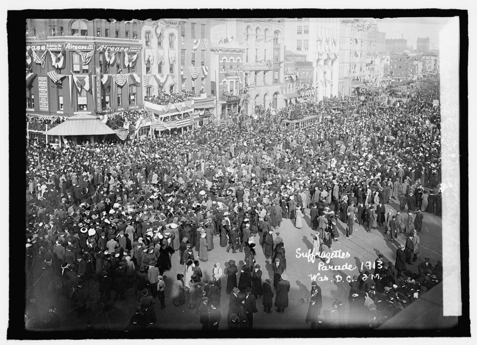
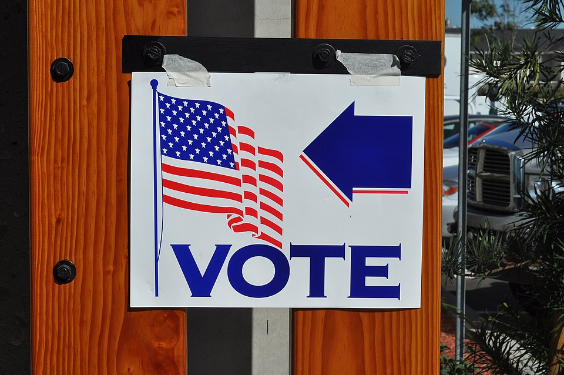
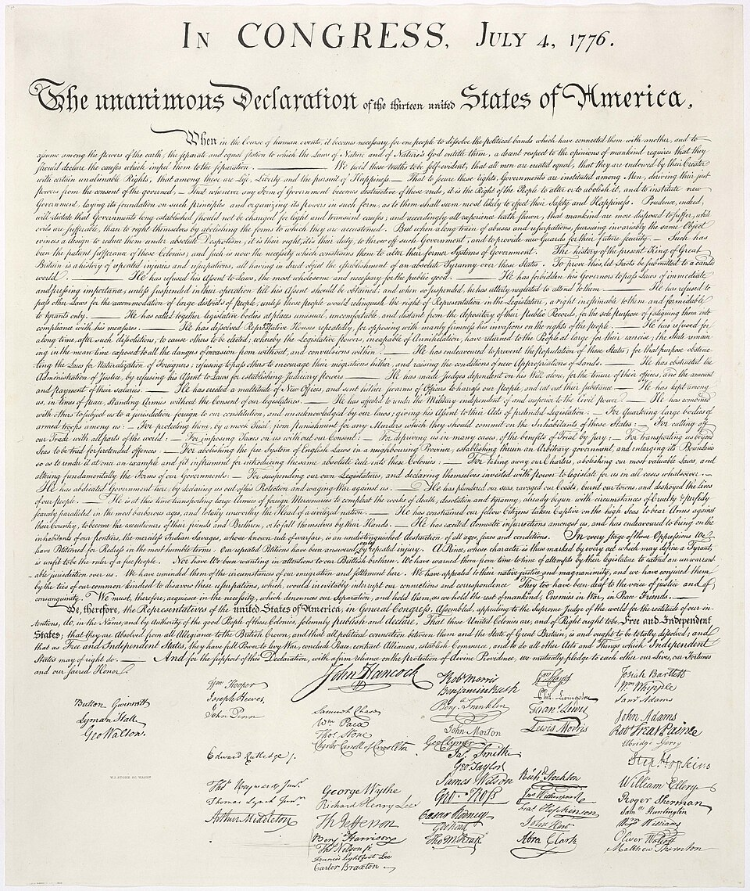

🧠 Chapter 1: Critical Thinking and the American Political System 🗳️
Explore how government works, who really governs, and why your participation matters
What is Government?
Explore how societies organize themselves, allocate authority, and provide for citizens through different governmental systems.
⭐ 200 points availableTypes of Goods & Government Services
Learn about public goods, private goods, common goods, toll goods, and how capitalism and democracy interact.
⭐ 200 points availableWho Governs? Elitism vs. Pluralism
Examine competing theories about who really holds power in America and how political decisions are made.
⭐ 200 points availableEngagement in a Democracy
Discover why civic engagement matters, how citizens participate, and factors affecting political involvement.
⭐ 200 points availableCritical Thinking & Political Culture
Master critical thinking skills and explore America's core political values: liberty, equality, and self-government.
⭐ 200 points availableGoverning Systems & Power
Understand democratic, constitutional, and free-market systems and the balance of power in American society.
⭐ 200 points available🏛️ What is Government?

Since its founding, the United States has relied on citizen participation to govern at the local, state, and national levels. This civic engagement ensures that representative democracy will continue to flourish and that people will continue to influence government. The right of citizens to participate in government is an important feature of democracy, and over the centuries many have fought to acquire and defend this right.
During the American Revolution (1775–1783), British colonists fought for the right to govern themselves. In the early nineteenth century, agitated citizens called for the removal of property requirements for voting so poor White men could participate in government just as wealthy men could. Throughout the late nineteenth and twentieth centuries, women, African Americans, Native Americans, and many other groups fought for the right to vote and hold office.

The purpose of voting and other forms of political engagement is to ensure that government serves the people, and not the other way around. Government affects all aspects of people's lives—what we eat, where we go to school, what kind of education we receive, how our tax money is spent, and what we do in our free time.
The Foundation of American Political Thought
According to John Locke, an English political philosopher of the seventeenth century, all people have natural rights to life, liberty, and property. From this came the idea that people should be free to consent to being governed.
In the eighteenth century, in Great Britain's North American colonies and later in France, this developed into the idea that:
- People should govern themselves through elected representatives
- Only representatives chosen by the people had the right to make laws to govern them
- The idea of liberty became an important concept
+15 points! Understanding the philosophical foundations of democracy!
Adam Smith, a Scottish philosopher, believed that all people should be free to acquire property in any way they wished. In his 1776 book The Wealth of Nations, published the same year as the Declaration of Independence, Smith argued:
- Business and industry should operate without government control
- People should keep the proceeds of their work
- Competition would ensure that prices remained low and faulty goods disappeared from the market
- Businesses would reap profits, consumers would have their needs satisfied, and society would prosper
These ideas formed the basis for industrial capitalism.
Two Systems That Developed Together
Representative government and capitalism developed together in the United States, and many Americans tend to equate democracy (a political system in which people govern themselves) with capitalism.
In theory:
- Democratic government promotes individualism and freedom to act
- Capitalism relies on individualism
- Successful capitalists prefer political systems they can influence to maintain liberty
The critique: Although Smith theorized capitalism would lead to prosperity for all, great gaps in wealth exist between owners of major businesses and those who work for wages. Great wealth may give a small minority greater influence over government than the majority of the population.
+15 points! Understanding the relationship between economic and political systems!
How Citizens Participate in Government
Civic engagement, or the participation that connects citizens to government, is a vital ingredient of politics. Americans play an important role in influencing:
- What policies are pursued
- What values the government chooses to support
- What initiatives are granted funding
- Who gets to make the final decisions
Forms of political engagement include:
- Reading about politics and listening to news reports
- Discussing politics with others
- Attending political debates (in person or televised)
- Donating money to political campaigns
- Handing out campaign materials
- Voting
- Joining protest marches
- Writing letters to elected representatives
+15 points! Understanding how citizens can make their voices heard!
📦 Types of Goods & Government Services
In the United States, the democratic government works closely with its capitalist economic system. The interconnectedness of the two affects the way goods and services are distributed. The market provides many goods and services needed by Americans—food, clothing, and housing are provided by private businesses that earn a profit in return.
However, the market cannot provide everything in enough quantity or at low enough costs to meet everyone's needs. Therefore, some goods are provided by the government. Understanding the different types of goods helps us understand what role government plays in our lives.
| Type | Description | Examples |
|---|---|---|
| Private Goods | Goods provided by private businesses that earn profit; people can purchase what they need in the quantity they need it | Food, clothing, housing, electronics |
| Public Goods | Goods or services available to all without charge, funded by taxes | National security, public education, police/fire departments, mail delivery |
| Common Goods | Goods all people may use free of charge but are of limited supply; must be protected so a few don't take everything | Fish in the sea, clean drinking water, public lands, wildlife |
| Toll Goods | Goods available to many people who can pay the price; middle ground between public and private goods | Private schools, toll roads, cable TV |
+15 points! Understanding the different types of goods in society!
Some goods and services are best provided by government because:
- National Security: It's difficult to see how private business could protect the country. How would it build armies, create defense plans, or gather intelligence? Only government can tax, draw upon national resources, and compel citizen compliance.
- Public Education: Public schools provide education for all children regardless of religion, race, ethnicity, socioeconomic class, or academic ability—from kindergarten through twelfth grade. Private schools charge tuition that many families cannot afford.
- Infrastructure: Roads, bridges, and public transportation systems benefit everyone and are most efficiently provided collectively.
One important thing government does is regulate public access to common goods like natural resources. Unlike public goods, which government can multiply if needed, common goods are in limited supply.
Fish are a common good that government regulates to ensure species are not fished into extinction, protecting future generations' food sources and livelihoods. This is called sustainability.
The tradeoff: Environmentalists want strict fishing limits, while commercial fishers resist these limits, claiming they would drive them out of business. Currently, fishing limits are set by scientists, politicians, local resource managers, and fishing industry representatives working together.
What Government Provides at Each Level
| Level | Services Provided |
|---|---|
| Local | Education, police, fire departments, parks maintenance, local courts, zoning |
| State | State colleges/universities, state roads and bridges, wildlife management, state courts, professional licensing |
| National | Defense, Social Security, veterans' pensions, federal courts and prisons, national parks, interstate highways |
At each level, representatives elected by the people try to secure funding for things that benefit their constituents.
+15 points! Understanding how different levels of government serve you!
Besides providing goods and services, government also:
- Maintains order through laws and enforcement
- Regulates the marketplace for fair operation of business
- Checks the actions of business (unlike Adam Smith's vision of unregulated capitalism)
- Protects citizens' freedoms including speech and press
- Allows citizen participation through voting and other means
Different Forms of Government Around the World
| Type | Description | Examples |
|---|---|---|
| Republic/Representative Democracy | Citizens elect representatives to make decisions and pass laws on their behalf; favors majority rule while protecting minority rights | United States, France, Germany |
| Direct Democracy | People participate directly in making government decisions | Ancient Athens; some U.S. referendums; New England town meetings |
| Monarchy | One ruler, usually hereditary, holds political power (may be limited or absolute) | Saudi Arabia (absolute); United Kingdom (constitutional) |
| Oligarchy | A handful of elite members of society hold all political power | Cuba, China (Communist Party rule) |
| Totalitarianism | Government is more important than citizens; controls all aspects of citizens' lives; no political criticism allowed | North Korea |
+15 points! Understanding the spectrum of governmental systems!
In the United States, most representative governments favor majority rule: the opinions of the majority of the people have more influence with government than those of the minority. However, minority rights are protected—people cannot be deprived of certain rights even if an overwhelming number think they should be.
Example: Even though atheists account for only about 7% of the population, they would be protected from persecution by minority rights protections, regardless of how the majority felt.
👥 Who Governs? Elitism vs. Pluralism
The United States allows its citizens to participate in government in many ways. It also has many different levels and branches of government that any citizen or group might approach. Many people take this as evidence that U.S. citizens, especially as represented by competing groups, are able to influence government actions. Some political theorists, however, argue that this is not the case. They claim that only a handful of economic and political elites have any influence over government.
Do the Elite Really Govern?
Consider these statistics about who holds power in America:
- One-third of U.S. presidents have attended Ivy League schools
- 95% of House members and 100% of Senators have bachelor's degrees
- Fewer than 40% of U.S. adults have even an associate's degree
- Majority of Congress members were businesspeople or practiced law before being elected
- Approximately 73% of Congress members are men, and about 76% are White
- About half of Congress members are millionaires
- As of 2022, approximately 34% of House members and 33% of Senators sent their children to private schools (compared to only 11% of the general population)
The argument: A Congress dominated by millionaires who send their children to private schools may be more likely to believe that a flat tax is fair and that increased funding for public education is not a necessity—views that don't reflect the experience of average Americans.
+15 points! Understanding the evidence for elite theory!
According to pluralist theory:
- Thousands of interest groups exist in the United States
- Approximately 70-90% of Americans report belonging to at least one group
- People with shared interests form groups to make their desires known to politicians
- These groups include environmental advocates, unions, and business organizations
- Because most people lack time or expertise for political issues, these groups speak for them
- As groups compete and conflict, government policy begins to take shape from the bottom up
Dahl argued that politicians seeking an "electoral payoff" are attentive to politically active citizens and, through them, become acquainted with the needs of ordinary people.
Reality: A Series of Tradeoffs
Although elitists and pluralists present political influence as a tug-of-war, in reality government action and public policy are influenced by an ongoing series of tradeoffs or compromises:
- An action that meets the needs of many people may not be favored by elite members
- Giving the elite what they want may interfere with plans to help the poor
- Public policy is created as a result of competition among groups
- Interests of both the elite and the people influence government action
- Compromises often attempt to please both sides
Historical example: Since the framing of the U.S. Constitution, tradeoffs have been made between those who favor the supremacy of the central government and those who believe state governments should be more powerful.
+15 points! Understanding the reality of political compromise!
Many Americans believe the U.S. must become less dependent on foreign energy sources. Many also want access to inexpensive energy. Such people might support fracking (hydraulic fracturing):
- Benefits: Produces abundant, inexpensive natural gas; creates jobs; helps heat homes cheaply
- Concerns: May contaminate drinking water, cause air pollution, increase earthquake risk; one study linked it to cancer
Those who want jobs and cheap energy are in conflict with those who wish to protect the environment and human health. Both sides are well-intentioned but disagree over what is best for people.
How Tradeoffs Work in the Legislative Process
Members of the Senate and House of Representatives usually vote according to the concerns of people who live in their districts. This often:
- Pits interests of people in different parts of the country against one another
- Favors certain groups over others within the same state
- Example: Allowing offshore drilling may please those needing jobs but anger those wanting to preserve coastal lands
Party vs. Constituents: Sometimes legislators ignore voters in their home states to follow party leaders' dictates. However, House members facing re-election (with two-year terms) are more likely to buck their party in favor of their constituents.
+15 points! Understanding congressional dynamics!
🗳️ Engagement in a Democracy
Participation in government matters. Although people may not get all that they want, they can achieve many goals and improve their lives through civic engagement. According to the pluralist theory, government cannot function without active participation by at least some citizens. Even if we believe the elite make political decisions, participation in government through the act of voting can change who the members of the elite are.

Political scientist Robert Putnam has argued that civic engagement is declining:
- Many Americans report belonging to groups, but these are usually large, impersonal ones with thousands of members
- People joining groups like Amnesty International or Greenpeace may share values but don't actually interact with other members
- These organizations differ from traditional groups like church groups or bowling leagues
- People are more interested in working individually or joining large organizations with little opportunity for interaction
Reasons for decline: Increased workforce participation by women, fewer marriages and more divorces, and technology (like the internet) that allows people to feel connected without actual presence.
Is Participation Really Declining?
Some scholars have countered Putnam's thesis:
- Everett Ladd shows many positive trends in social involvement in American communities
- Example: While bowling league participation is down, soccer league participation has proliferated
- April Clark analyzes social capital data and disputes the erosion thesis
- Others suggest technology has increased connectedness, though Putnam critiques this as not as deep as in-person connections
+15 points! Understanding both sides of the civic engagement debate!
Civic engagement can increase the power of ordinary people to influence government actions. Even those without money or connections can influence policies that affect their lives and change the direction taken by government.
Historical Examples of Success:
- Abolitionists (including ordinary men and women of both races) ended slavery
- The 15th Amendment gave African American men the vote
- The 19th Amendment extended voting rights to women
- The Voting Rights Act of 1965 made voting a reality for Black citizens in the South
- Activists achieved greater reproductive freedom for women, better wages, and access to credit
- LGBTQ+ rights including legal same-sex marriage and protection against employment discrimination
Ways Citizens Can Get Involved
Individual Actions:
- Stay informed about debates and events from reputable news sources
- Write or email political representatives
- File complaints with city council
- Respond to public opinion polls
- Contribute to political blogs or start one
- Engage on social media (though be aware of bias and fake news)
- VOTE! Individual votes do matter for city councils, mayors, state legislators, governors, and Congress
- Attend political rallies
- Donate money to campaigns
- Sign or start petitions
Group Actions:
- Host a book club or discussion group about politics
- Work for political campaigns
- Help register voters
- Drive voters to polls on Election Day
- Join interest groups that promote causes you favor
+15 points! Knowing multiple pathways to engagement!
Today's college students can vote because of the activism of college students in the 1960s. Most states then required citizens to be 21 before they could vote. Young men who could be drafted to fight in Vietnam argued it was unfair to deny 18-year-olds the right to vote for those who could send them to war.
As a result, the Twenty-Sixth Amendment, which lowered the voting age to 18 in national elections, was ratified and went into effect in 1971.
Young Americans and Politics
Historical patterns:
- Americans aged 18-29 have been less likely to engage in traditional political activity than older Americans
- 2018 poll: Only 24% of young adults claimed to be politically engaged; fewer than 35% had voted in a primary
Recent changes:
- 2018 midterms: Estimated 31% of Americans under 30 voted—highest youth engagement in decades
- 2020 election: Record youth turnout of 53%—greater than the historic 2008 contest
- Young vote swung heavily toward Biden in swing states
Why youth are sometimes disengaged:
- Partisanship alienates many young people who prefer representatives vote in the nation's best interests
- Many identify as Independents rather than Democrats or Republicans
- Focus on specific issues (like same-sex marriage) rather than party loyalty
- Candidates often don't tackle issues relevant to young people's lives (though this changed with Bernie Sanders' free college tuition platform)
+15 points! Understanding youth engagement patterns!
🤔 Critical Thinking & Political Culture
Critical thinking is essential for a healthy democracy. As citizens, we must be able to evaluate political claims, understand different perspectives, and make informed decisions about the issues that affect our lives. Political scientists offer tools and insights for developing these critical thinking skills.
Political scientists provide help and insight for critical thinking by:
- Using empirical methods to study political behavior and institutions
- Developing theories that explain how politics works
- Testing hypotheses about political phenomena
- Analyzing data to understand trends and patterns
- Comparing different political systems to understand what works
Remember: The systems we have were deliberately designed. Understanding why they were created this way helps us evaluate whether they still serve their intended purposes.
The Foundation of American Political Culture
American political culture is built on several core values that have shaped our institutions and continue to influence political debates:
| Value | Definition | Significance |
|---|---|---|
| Liberty | The state of being free from oppressive restrictions imposed by authority on one's way of life, behavior, or political views | Fostered by unprecedented economic opportunities in the New World; Tocqueville noted Americans' chief aim "is to remain their own masters" |
| Equality | The notion that all individuals are equal in their moral worth and entitled to equal treatment under the law | Perplexing ideal in early years when some were free while others were enslaved; differing opinions persist |
| Self-Government | The principle that the people are the ultimate source of governing authority and should have a voice in their governing | American colonials had substantial self-determination; vision of "just powers [derived] from the consent of the governed" |
+15 points! Understanding America's core political values!

"We hold these truths to be self-evident, that all men are created equal, that they are endowed by their Creator with certain unalienable Rights, that among these are Life, Liberty and the pursuit of Happiness.—That to secure these rights, Governments are instituted among Men, deriving their just powers from the consent of the governed."
Americans' cultural beliefs are idealistic—and we have not always lived up to them. Failures to meet these high ideals include:
- Slavery – Direct contradiction of liberty and equality
- Post-slavery Jim Crow era – Legal segregation and discrimination
- Racial immigration restrictions
- Limited voting rights (initially only for White male property owners)
But ideals also inspire change:
- The struggle to build a more equal society is ongoing
- Civil rights movements have expanded rights over time
- Previous: abolition and expanded suffrage
- Ongoing: equal treatment for minorities, LGBTQ+ community, and religious minorities
What Does Equality Mean?
Equality has never been an American birthright. Different people have different ideas about what equality means:
- Equality of opportunity: Everyone should have the same chance to succeed, regardless of their background
- Equality of outcome: Society should ensure more equal results, not just equal chances
- Legal equality: Everyone should be treated the same under the law
- Political equality: Every citizen should have an equal voice in government (one person, one vote)
- Social equality: No one should be treated as inferior based on characteristics like race, gender, or class
These different conceptions of equality lead to very different policy positions on issues like affirmative action, taxation, and welfare programs.
+15 points! Understanding the complexity of equality!
⚖️ Governing Systems & Power
Understanding how power operates in America requires examining three interconnected systems: democratic, constitutional, and free-market. Each system has its own logic, participants, and implications for who gets what from government.
How America's Governing Systems Work
| System | Description | Who Has Power? |
|---|---|---|
| Democratic | A system of majority rule through elections | Majorities (majoritarianism), Groups (pluralism), Officials (authority) |
| Constitutional | A system based on rule of law, including legal protections for individuals | Courts, citizens exercising rights through legal action |
| Free Market | An economic system that centers on transactions between private parties | Business firms (corporate power), the wealthy (elitism) |
+15 points! Understanding America's interconnected governing systems!

The writers of the U.S. Constitution devised an elaborate system of checks and balances and added a Bill of Rights. Key concepts include:
- Constitutionalism: The idea that there are lawful restrictions on government's power
- Restraints on the power of the majority: Even if most people want something, they cannot violate constitutional protections
- Legal action: The use of the courts as a means of asserting rights and interests—a channel through which ordinary citizens can exercise power
Capitalism and Political Power
A free-market system operates mainly on private transactions, with some government intervention through regulatory, taxing, and spending policies.
Key power dynamics:
- Corporate power: The influence business firms have on public policy. Large corporations can lobby government, fund campaigns, and shape public opinion
- Elitism: The power exercised by well-positioned and highly influential individuals. The wealthy may have disproportionate influence over political decisions
This creates tension: democratic ideals suggest equal political power, but economic inequality can translate into unequal political influence.
+15 points! Understanding free-market power dynamics!
In contrast to democratic systems, authoritarian government openly represses its political opponents. Characteristics include:
- Restriction of political rights and civil liberties
- Suppression of political criticism and opposition
- Use of intimidation, imprisonment, and physical abuse
- Control of media and information
The United States operates by a different standard based on democracy, constitutionalism, and a free market—though critics argue that each of these systems has limitations and contradictions.
The Ongoing Tension
American governance involves constant tension between different sources of power:
- Majority vs. Minority: Democracy empowers majorities, but constitutionalism protects minorities
- Federal vs. State: Power is divided between national and state governments
- Branches of Government: Legislative, executive, and judicial branches check each other
- Elites vs. People: Economic elites have resources, but numbers matter in elections
- Individual vs. Collective: Liberty emphasizes individual freedom, but some goals require collective action
These tensions are not flaws—they were deliberately designed into the system to prevent any single group from dominating.
+15 points! Understanding the deliberate balance of power!
Make sure you understand these commonly confused terms:
- Legislature: The legislative body of a country or state. Example: Congress
- Legislator: A person who makes laws; a member of a legislative body. Example: Congressman Smith
- Legislation: A bill or resolution under consideration by a legislature. Example: House Bill 123
Use your browser's "Save as PDF" option. Submit this PDF — screenshots will not be accepted.
TCC Trailblazer Trek - Completion Report
Chapter 1: Critical Thinking and the American Political System
Student Information
Section Performance
| Section | Status | Time Spent |
|---|---|---|
| 1. What is Government? | ⭕ Not Started | 0:00 |
| 2. Types of Goods & Services | ⭕ Not Started | 0:00 |
| 3. Elitism vs. Pluralism | ⭕ Not Started | 0:00 |
| 4. Engagement in Democracy | ⭕ Not Started | 0:00 |
| 5. Critical Thinking & Culture | ⭕ Not Started | 0:00 |
| 6. Governing Systems & Power | ⭕ Not Started | 0:00 |